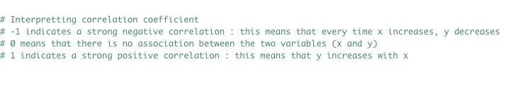

Before we can begin to examine the correlation between different variables related to hurricanes, we must first understand the science behind hurricanes and the severity categorization imposed upon them. Hurricanes are substantially large subtropical storms that develop over humid ocean waters before trekking towards land.
The threats from hurricanes are abundant; however, the most common come in the forms of powerful winds, heavy rain, storm surge, coastal and inland flooding, rip currents, isolated or numerous tornados, and landslides. Hurricanes can differ in size dramatically; however, the average size is typically around 300 miles in diameter.(NOAA)
To put this in perspective, the whole state of Ohio is only 220 miles wide; thus, an average size hurricane could dwarf major cities and many states.
The wind is where hurricanes make their bread and butter, as well as earn their insignia of category strength based off the Saffir-Simpson Hurricane Wind Scale.
The Saffir-Simpson Hurricane Wind Scale categorizes hurricanes based off sustained wind speed using the scale- category 1: 74-95 mph (Very dangerous winds will produce some damage), category 2: 96-110 mph (Extremely dangerous winds will cause extensive damage), category 3: 111-129 mph (Devastating damage will occur),
category 4: 130-156 mph (Catastrophic damage will occur), and category 5: 157< mph (Catastrophic damage will occur). With the high winds comes the rain and storm surge that often cause prolonged damage and potentially hazardous conditions for first responders addressing the aftermath of a hurricane.
Many hurricanes bring inland flooding hundreds of miles from where the hurricane originally made landfall. This is because as the storms began to weaken over land they slow down, producing continued rising air and rain. The heavy rains often lead to flash floods and stranded motorist.
The inland flooding, rip currents, storm surge, landslides, and wind are all well-known with hurricanes and although dangerous, they can seem secondary when there is often one or more duplicitous loiters roaming amongst the dark backdropped clouds. The tornados that can spawn from the outlying clouds can be
devastating by themselves but mix in a state or section of the country already in a state-of-emergency and you have a recipe for catastrophic loss. According to (Veering Winds and Shears – McCaul 1991) “As tropical cyclones make landfall, storm forces begin to decay, and wind speeds near the land surface fall off more
quickly than wind speeds at higher altitudes due to friction at the ground level. This vertical gradient in wind forces, as well as extreme changes in wind direction.(McCaul)
Because hurricanes form when the presence of a weather disturbance, such as a thunderstorm, pulls warm surface air from many directions with that of warm ocean
surface temperatures (NOAA), I began to hypothesize whether the fluctuations in surface temperatures of the ocean has produced an increase or decrease in hurricanes.
Source: https://www.factsjustforkids.com/images/saffir-simpson-hurriane-wind-scale.png

When we are interested in the relationships between variables, including projected relationships, performing a correlation analysis is an excellent way to observe the statistics behind the relationships.
Correlation analysis is a specific quantitative approach in statistics to calculate directional and strength of correlation between variables.
We can observe the direction of the correlation through scatterplots, looking at the relative shaping and direction of the plot points figure. If we see positive linear correlation the plot points will be rising in conformity, following a track similar to ( / ).
However, if the plot points are showing structure, but the line is decreasing ( \ ), the correlation is negative.
If the plot points appear to show no structure, looking scattered about all over or more in a circular formation, we would assume neutral correlation with little to no systematic relationship.
While we observe the direction of the correlation it is easy to assume or not assume a relationship based on the structure of the plot points; thus, we can for assumptions regarding the strength based on the shape or profile of the plot points.
If we observe the scatterplot and all the plot points form a straight line, we consider this a perfect correlation and the strongest when discussing strength of association. If we see the plot points tightly packed along a positive or negative fit line, similar to the lines discussed above regarding direction of the relationship, this is considered a strong correlation.
If the plot points are more widely dispersed and not hugging the fit line quite as tight but still in structured together profile, this is considered a week correlation. A circular arrangement of plot points would imply no correlation.
When partaking in a correlation analysis, it is important to remember that correlation ≠ causation. It is important to take into account alternative variables that may be impacting your correlation, address them if possible, but at least be aware of them when concluding your results and making assumptions.
A great example used in many statistical books and articles is the relationship between a decrease in annual flu cases each year at the same time as an increase in ice cream sales. If you compared the data and ran a correlation analysis on the values, produced scatterplots or other visuals, it could be easy to come to the conclusion there is a relationship between eating ice cream and not getting the flu.
However, this is not the case and unfortunately eating ice cream does not lower your chance of getting the flu.Instead this relationship is because of an outside variable consisting of things like seasonal food preferences and flu season highs and lows. During the summer months we see a decrease in flu cases because it is not the peak time for the flu bug; while, we also see an increase in ice cream consumption because of warmer weather.
This is an example of data that is correlated but the correlation is not causation.
After running a correlation test, we will also compute a correlation coefficient. A correlation coefficient is an index that is used to portray the direction and strength of the variable’s relationship. The correlation coefficient is between [-1, +1], with (+1) being a perfect positive correlation, (-1) being a perfect negative correlation, and (0) being a complete absence of correlation.
If the value falls between (-1, +1) then the correlation strength and direction are determined based on where the value falls on the scale.
There are three types of correlations- Pearson, Spearman, and Kendall. Pearson is the most generally used index for correlation among two variables. Used for interval and ratio values with both variables coming from normally sampled distributions. Another factor that is looked at with Pearson is the covariation of variables, which is the degree that two variables co-vary.
If variables co-vary in similar manners, we consider this strong correlation, but if there no consistent co-variation it is considered a weak correlation.
Because we are only utilizing Pearson's correlation during our correlation analysis into sea surface temperature anomalies and hurricane frequency, I am not going to go into any more details regarding the Spearman and Kendall correlation methods. However, if you are interested in the alternative methods you may find more information at the link below.
Pearson's correlation mathematical expression found at link
Pearson's Mathematical Expression
Correlation analysis types and processes for R can be found at link:
Quick-R:The data obtained and used for this analysis consisted of a two .xlsx files, one for hurricanes and one for sea surface temperature anomaly.
The sea surface temperature data originated from NOAA and consist of the average sea surface temperature anomalies since 1880- in (°F). It is comprised of four variable columns: Year, Annual anomaly, Lower 95% confidence interval, and Upper 95% confidence interval. The data then has 137 rows of data, one for each year 1880-2015.
The hurricane data I used was from ‘Maps of World’; where, I found four data tables 1852-1899,1900-1950,1952-1999, and 2003-Present. The missing dates in the table year lists is because not every year did the U.S. have a named hurricane or there was no data for that year. To construct the data table with all years 1852-present, I had to first transfer each table individually into excel and create a .csv spread sheet with all the U.S. based storms. The table consisted of 262 rows and five variable columns. The variable names are as follows: State name, Name, Saffir-Simpson Category, Date of closest approach, and Year.
The next step with the data collection and preprocessing before being able to utilize the data in R, consisted of adding a new column name to sea surface temperature called ‘Group’. I then added a value to the Group column that was the five-year date range of each group; thus, adding an easy prior column for data analysis if we needed statistics based off the grouping of years. After completing both tables I ensured we had proper formatting and no blank cells. Because R can be picky at times with data tables and formatting it is important to ensure tables are formatted correctly.
Sea Surface Temperature Anomaly Data
Sea Surface Temp DataHurricane Frequency Data
Hurricane Data The analysis steps performed in R to complete the correlation test are shown below.
Load data into R or Rstudio
We can then load the packages all at once or as needed. If you load them all at the beginning some features will be masked from other variables, packages or data at times. In some analysis this could be an issue; however, the packages become masked in this example due to repeated tools and I did not experience any issues loading them at the start.
Now we can begin to filter some of the dates down so that both table have equivalent year ranges.
Next, we will join the tables together.
We can now utilize a couple simple scatterplots to visualize our data.

Because there is so many points for all the hurricanes from 1880, along with seasonal sea surface temperature anomalies, we need to condense the the years into 5-year increments using ‘Group’ variable in Sea.temp.hurr data frame.
Now we will take a look at the new data.frames on more scatterplots, including a 3D scatterplot.
We can now create a new data frame for frequency of hurricanes and merge it with all our other combines data in the data frame ‘Combination’.
With our new data frame ‘Analysis.data’ we have duplicate rows; thus, we will now create a new data frame and adjust for the duplicate rows.
We can now use our analysis ready data to visualize the relationship again in a 3D scatterplot.

We can also change around variables to have a better understanding of the association amongst variables.
Now that we have been able to visualize the correlation data a little, we can now do a Shapiro-Wilk normality test.
We can see that one variable is below the 0.5 p-value threshold; therefore, we can reject the null hypothesis and we some evidence the data is not normally distributed for Freq. The p-value for our temperature anomalies is however accepted and appears from a normal distribution.
Because this can sometimes not be the best judge of normality, especially when the variable was close to the 0.5 sensitivity, we will do Q-Q plots to check the data normality again.
We can now assume that our variable data is from normal distributions and can therefore begin the correlation test.
To interpret the correlation coefficient, we can use the following guide.

We can now visualize the data for the last time to inspect the correlation.
We can see that by exploring the variables we obtain a better understanding of the data’s values, and association with other variables; which, allows us to better gain a grasp of how useful the data may be in the context of our research. Although, we could not see correlation when we were plotting multiple hurricane points for each year, we did however find that a reduction in hurricane values by averaging five-year limits for hurricanes improved our correlation. The proposed relationship between sea surface temperature anomalies and hurricane frequency began strong while exploring the data. In our first scatterplot we saw that there was a linear positive association between sea surface temperature anomaly and a yearly timeline progression, including when we grouped the year ranges.
The first 3d scatterplot I believe added useful visualization to this analysis, really allowing us to see how the anomaly values we negative for much of the century, but then began increasing in a linear manner. However, the second 3d plot was certainly easier to understand because of the reduced points due to grouping the storms by years. In interesting fashion though I noticed that in many of the plots related to hurricane frequency and anomalies, the correlation appeared to show a decrease in hurricane frequency when sea temperature anomalies are positive. This in my opinion was due to the high fluctuation in anomaly values prior to grouping them in 5-year increments.
The Q-Q plots showed an excellent example of how some ways of checking data can provide different results than others. Originally, the data was not from normal distributions; however, as we combined year increments, we saw the distribution improve. However, the Shapiro-Wilk normality test still deemed one set of data as not normally distributed. When we utilized the second option of the Q-Q plots, we were able to see the data could be used; however, with little room for error regarding quantity of point used.
Our final calculation allowed us to derive a p-value of 0.3821151; thus, we can reject the null hypothesis. We can see that there is association and correlation between the sea surface temperature anomalies and hurricane frequency; however, the values in the anomaly data do not begin to show correlation until the hurricane frequency is grouped in increments and the anomaly values averaged.
In order to improve the analysis in the future I am going to utilizing all tropical depressions and above because I believe that much of the correlation between the two variable is minor in the grand scheme of the whole ocean and therefore the increase in sea temperature through the years is more likely causing or just correlating to tropical depressions, but not necessarily hurricane strength storms.
.Liberto, T. D. (2015). Exactly the same, but completely different: why we have so many different ways of looking at sea surface temperature. Climate.Gov.
Luan, D. H. (n.d.). GEOG 496 Lecture Slides.
Maps of World. (n.d.). Hurricane Dates and Names. Retrieved from Maps of World Current, Credible, Consistent: https://www.mapsofworld.com/hurricane/dates.html
National Oceanic and Atmospheric Administration U.S. Department of Commerce . (n.d.). Hurricanes. Retrieved from NOAA: https://www.noaa.gov
Operations, N. O. (n.d.). Sea Surface Temperature (SST) Contour Charts.
QuickR: By Data Camp. (n.d.). Correlations.
Thompson, David W.J., J.J Kennedy, J.M. Wallace, P.D. Jones, 2008: A large discontinuity in the mid-twentieth century in observed global-mean surface temperature. Nature, 453, 646-649
W3Schools.com. (n.d.). Tutorials.
(US EPA United States Environmental Protection Agency , n.d.)